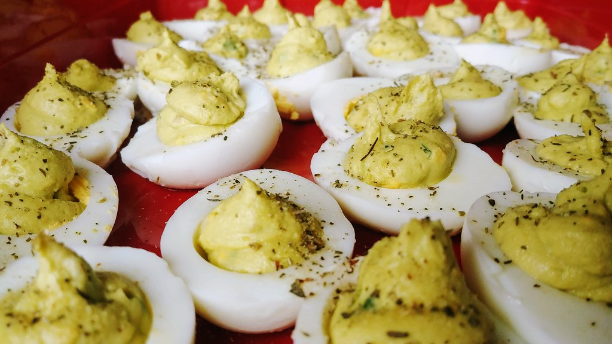

Avocado Deviled Eggs

Description
These Deviled Eggs will be the center piece at any party!
Their signiture creamy filling made from hard-boiled egg yolks, avocado, mayo and lime make for a nice supprise!
Ingredients
- 6 hard-boiled eggs, peeled and halved
- 1 avocado-peeled, pitted, and diced
- 2 1/2 tablespoons mayonnaise
- 2 teaspoons lime juice
- 1 clove garlic crushed
- 1/8 tea spoon cayenne pepper
- A bit of sea salt for taste
Steps
- Scoop egg yolks into a bowl
- Add avocado, mayonnaise, lime juice, garlic, caynne pepper, and salt.
- Mash egg yolk mixture until filling is evenly combined
- Spoon filling into a piping bag or plastic bag with a snipped corner
- Pipe filling into each egg white
- Vola! It's ready to eat!
Home